Elke vrijdag de beste wijnaanbiedingen
Alle wijnen die we beoordeeld hebben
Onze kwaliteitsscore gaat over de wijn zelf en staat los van de prijs van vandaag. Zoek op naam, land, streek, druif of kleur.
Filtersgeen actief
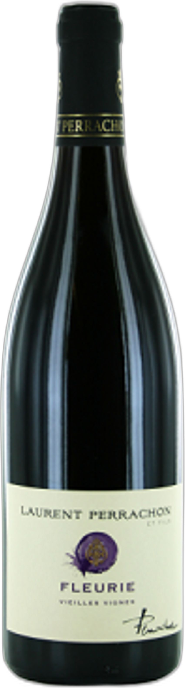
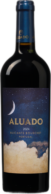

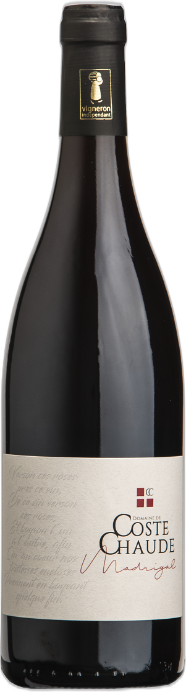


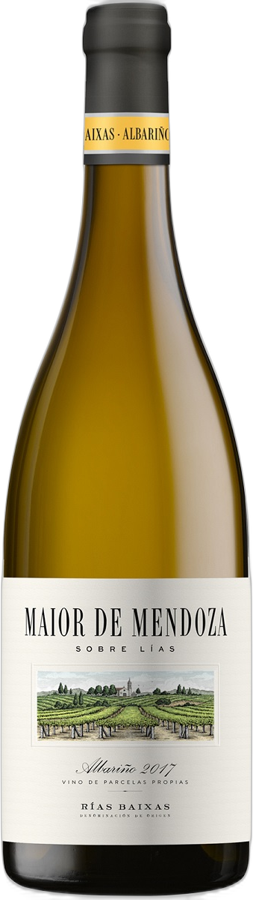
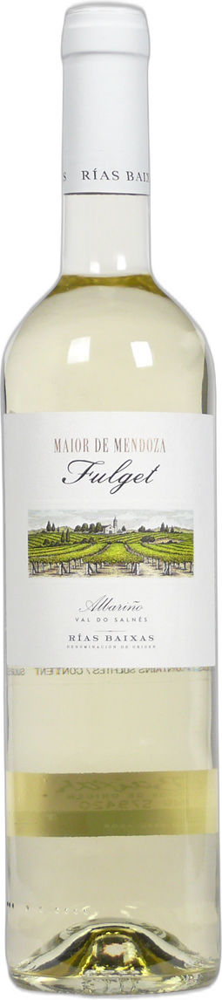
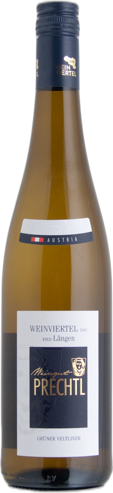
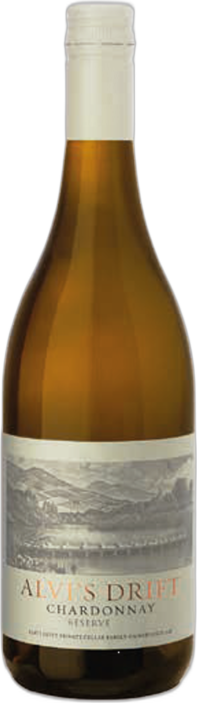
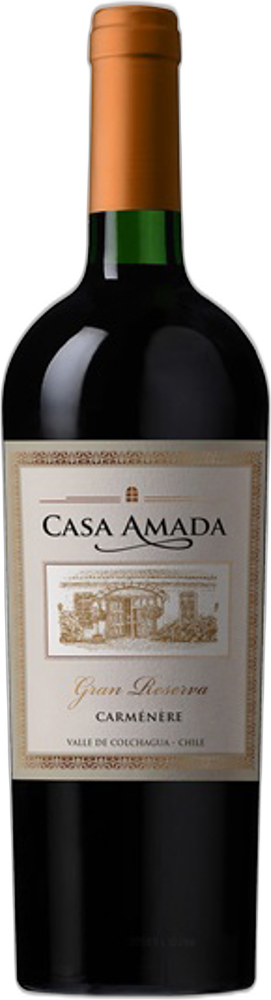
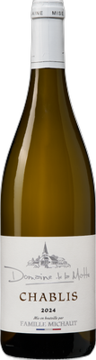
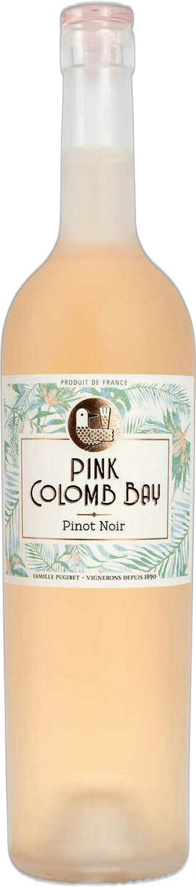
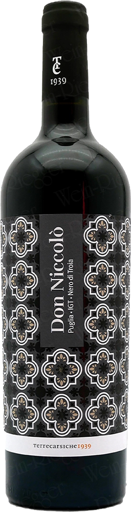
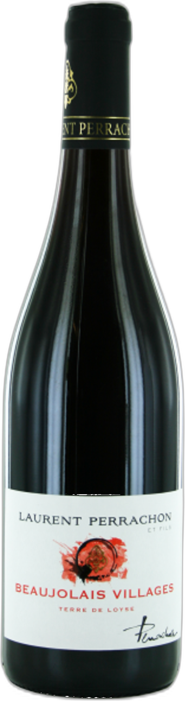
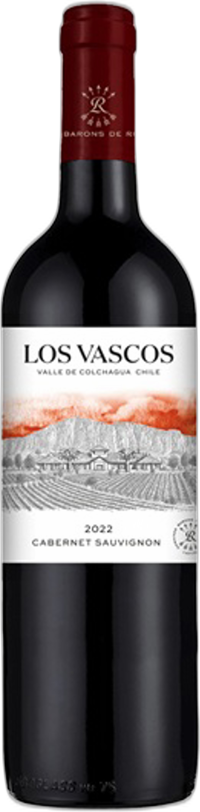
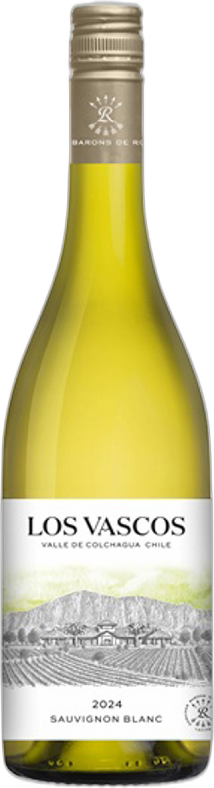
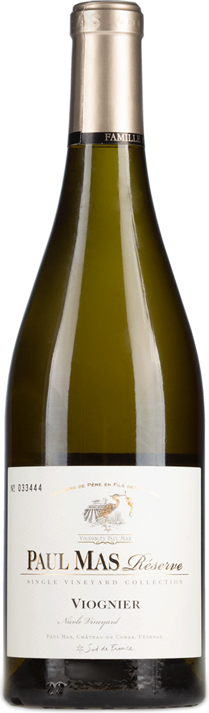
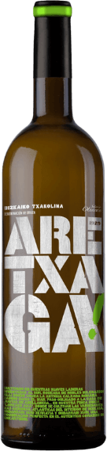
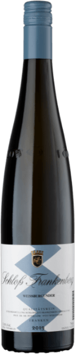
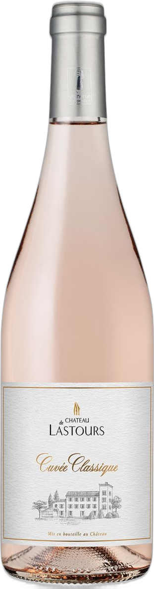
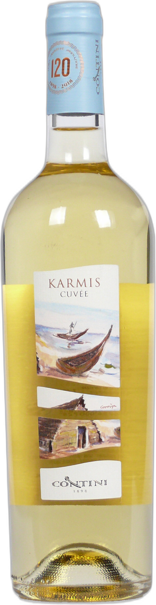
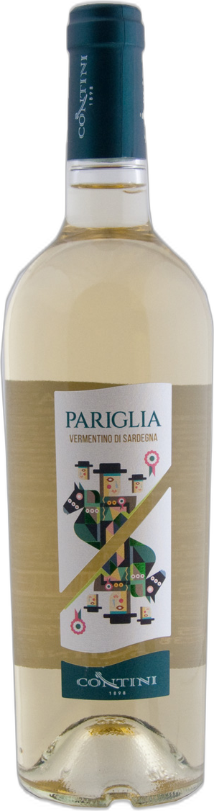
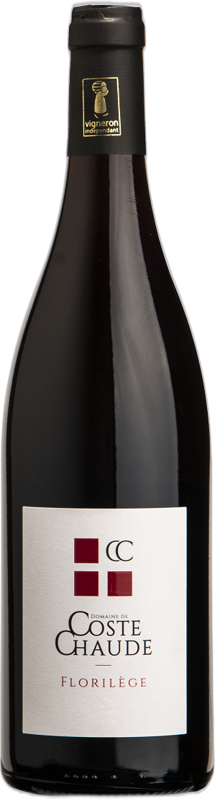
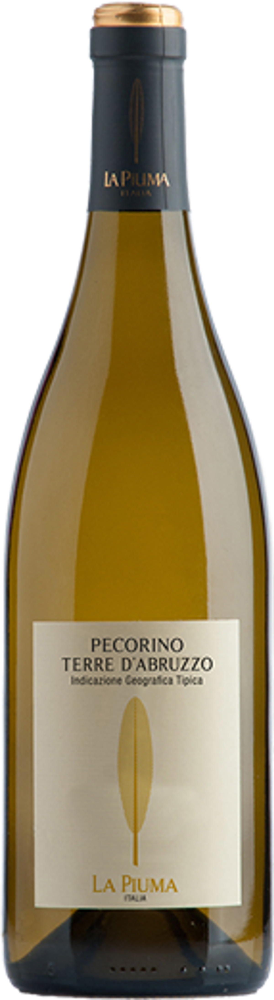
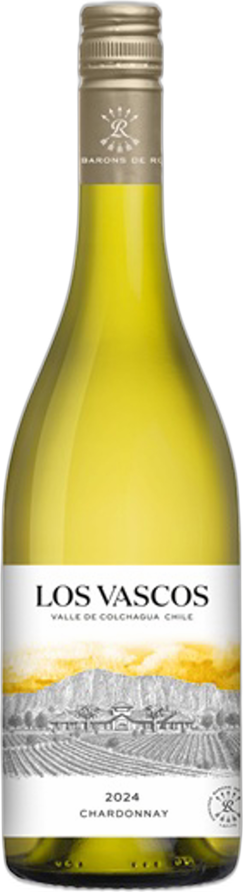
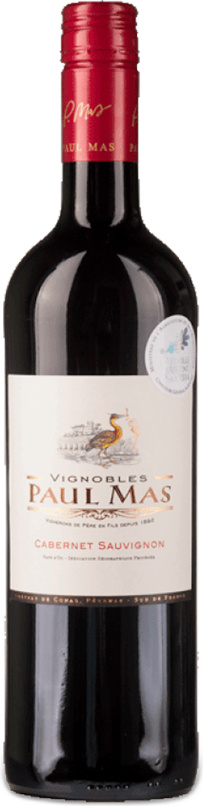
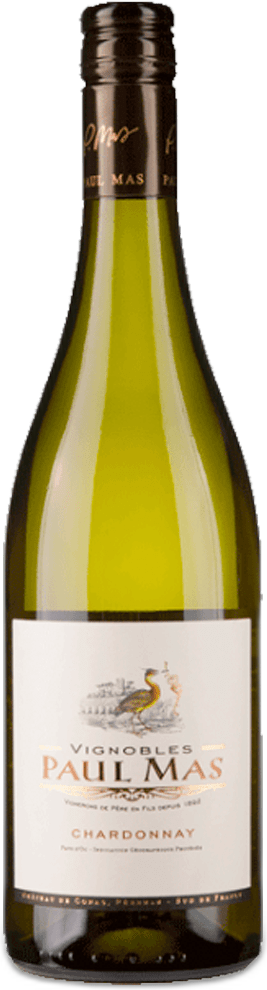
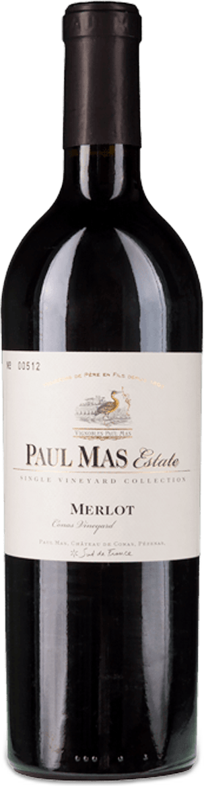
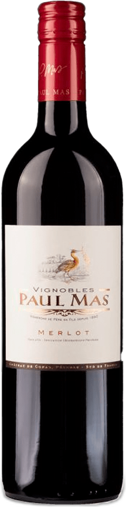
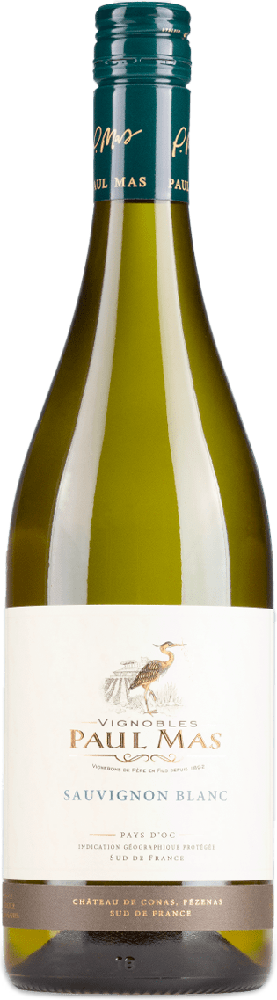
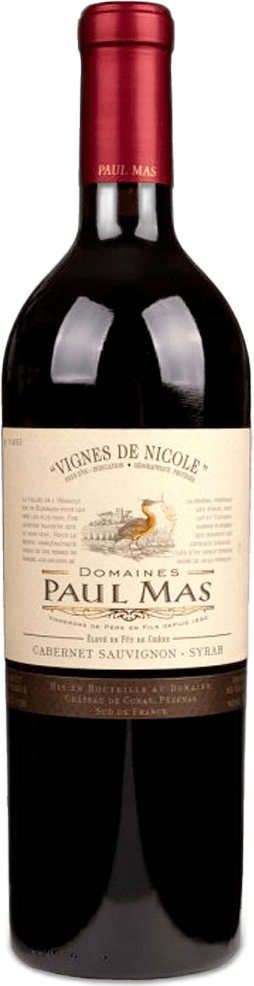
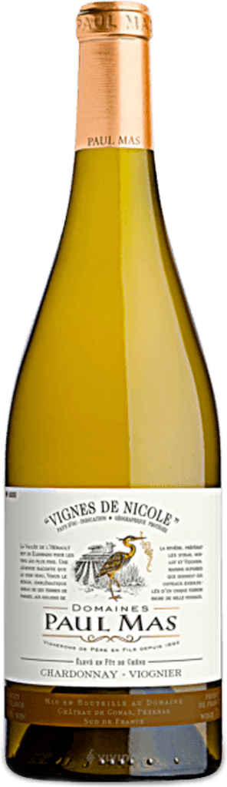
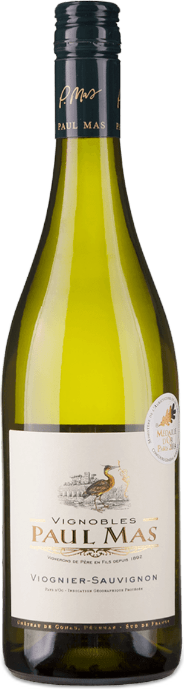
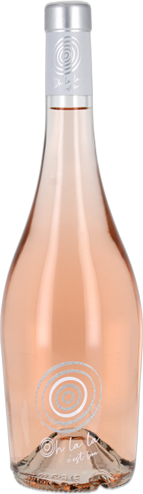
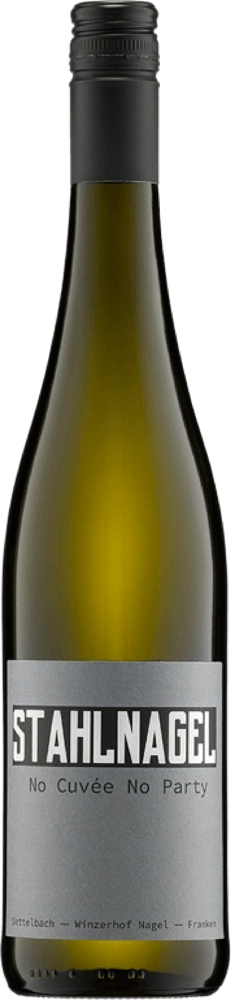
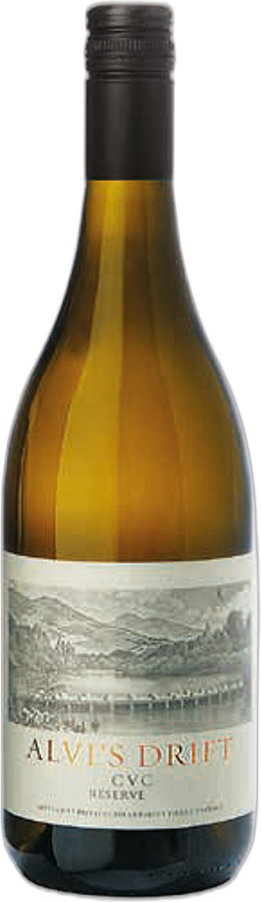
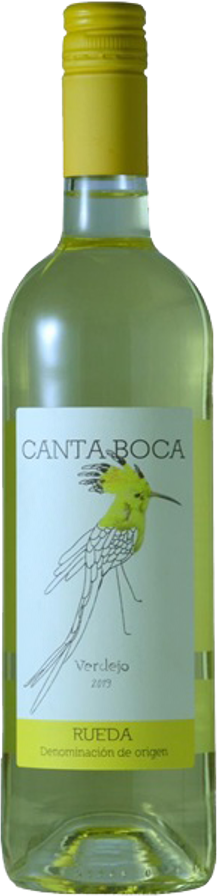
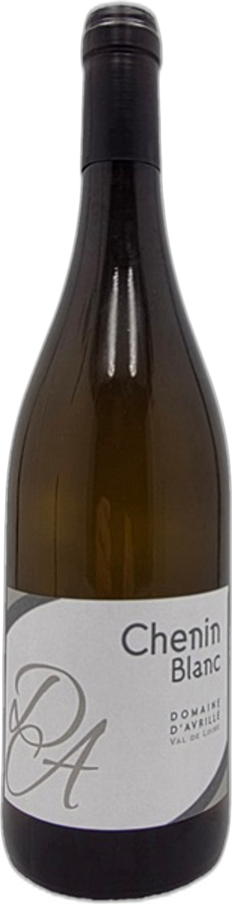
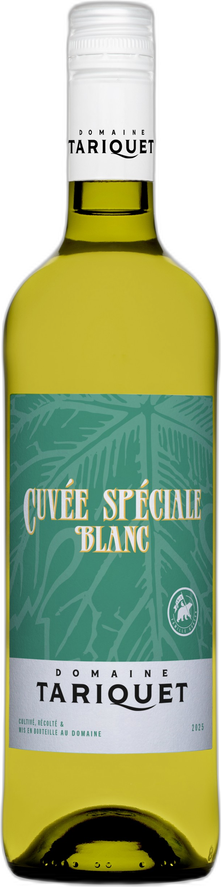
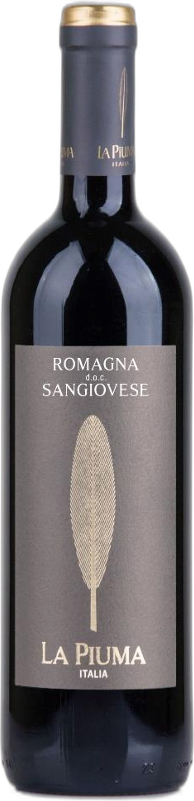
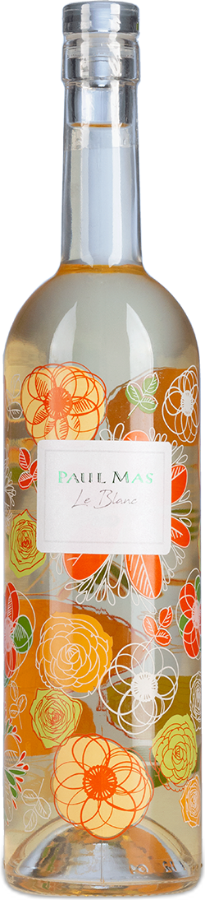
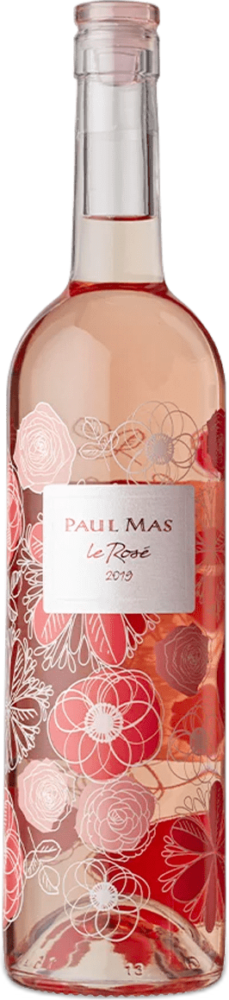
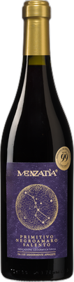
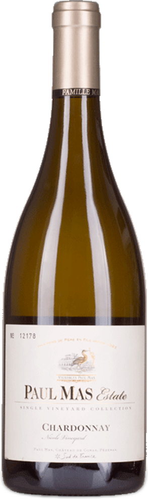
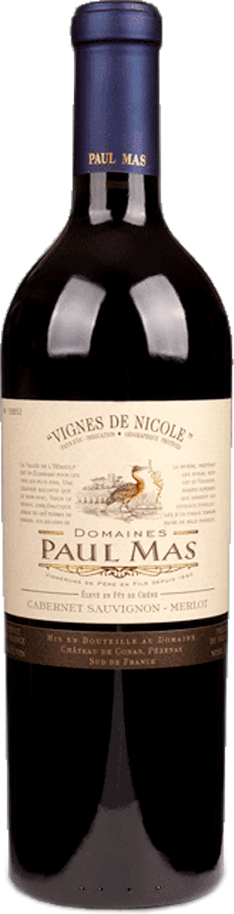
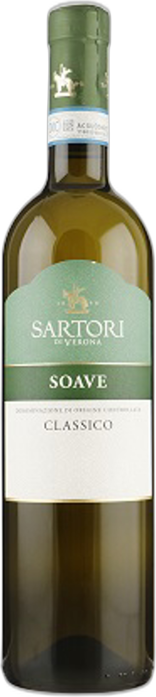
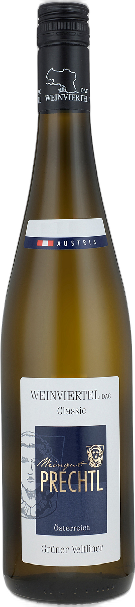
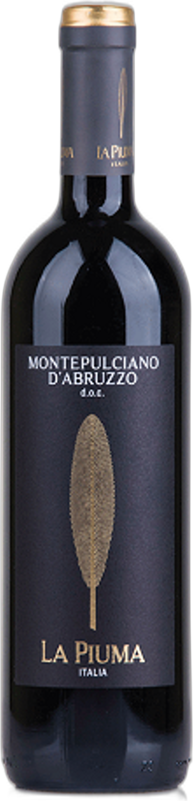
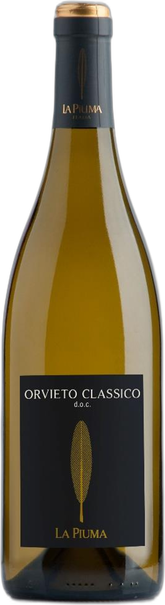
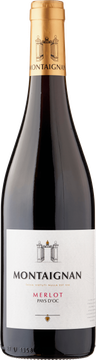
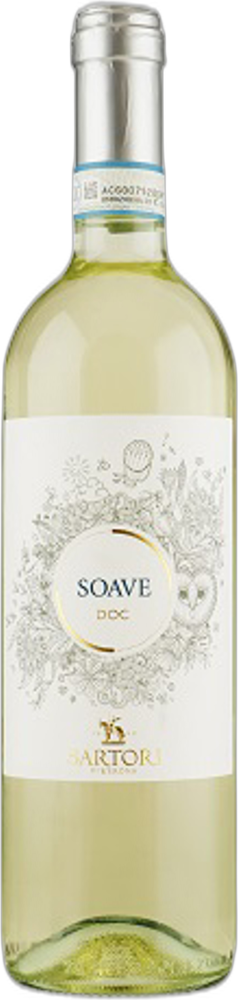
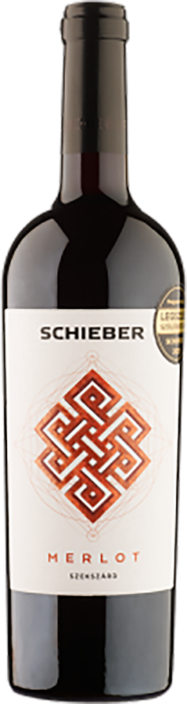
Geen wijn gevonden met deze combinatie.
We beoordelen alleen wijnen die we in een aanbieding tegenkomen, dus de kennisbank groeit elke vrijdag. Probeer een ruimere zoekopdracht.
Je aanmelding is binnen!
Je krijgt de eerstvolgende editie op vrijdag in je inbox.